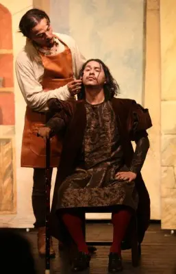
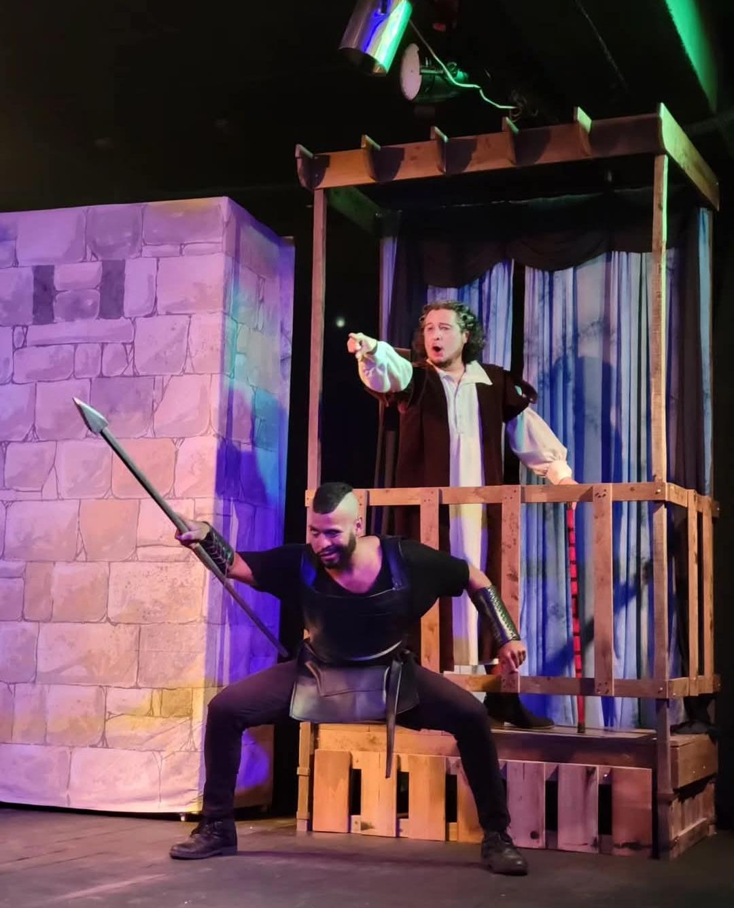
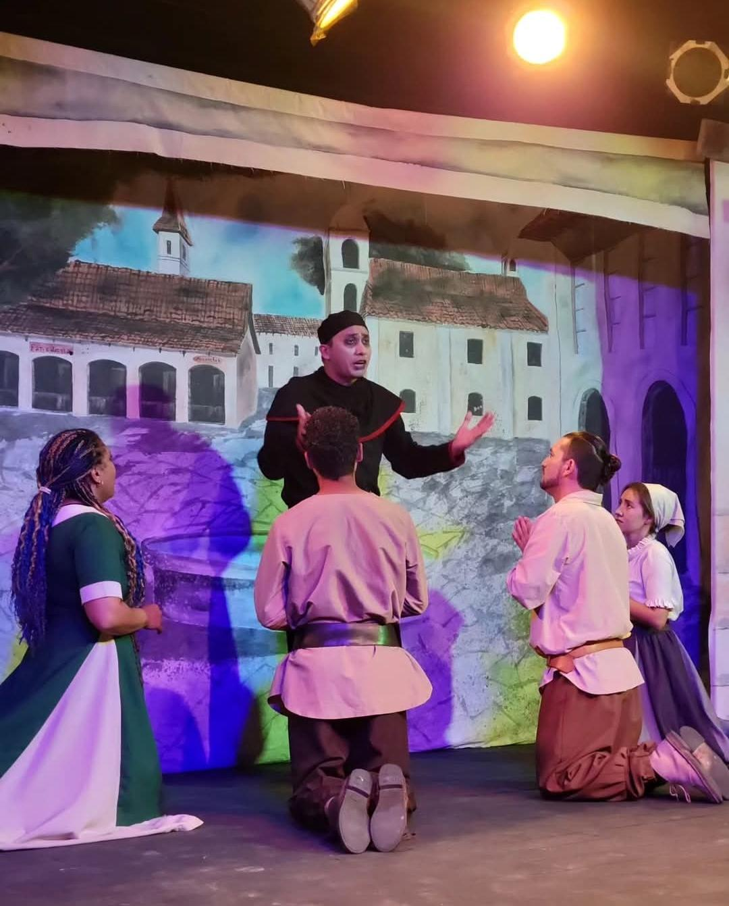
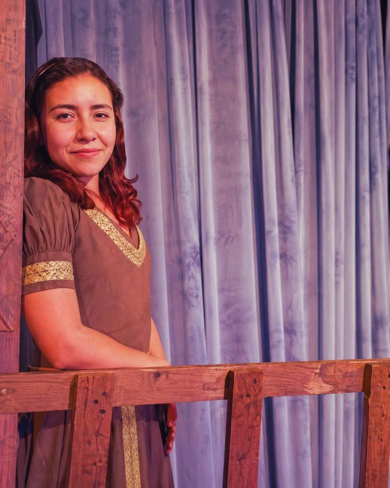
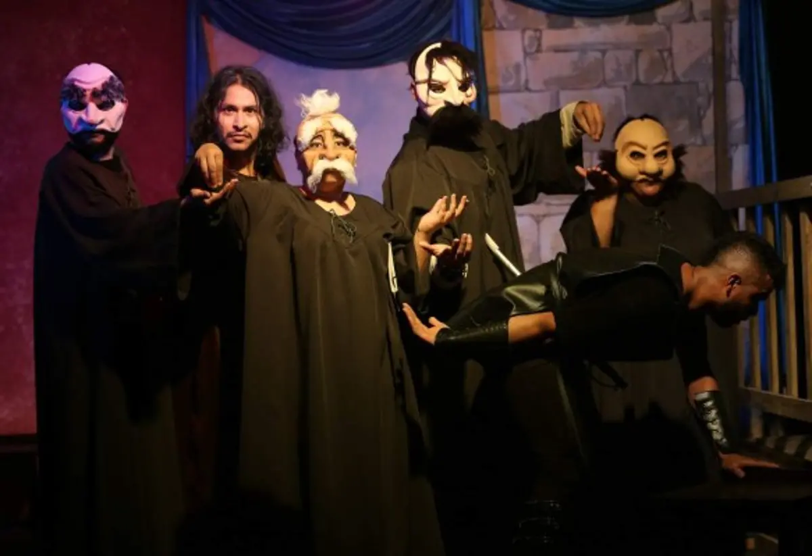
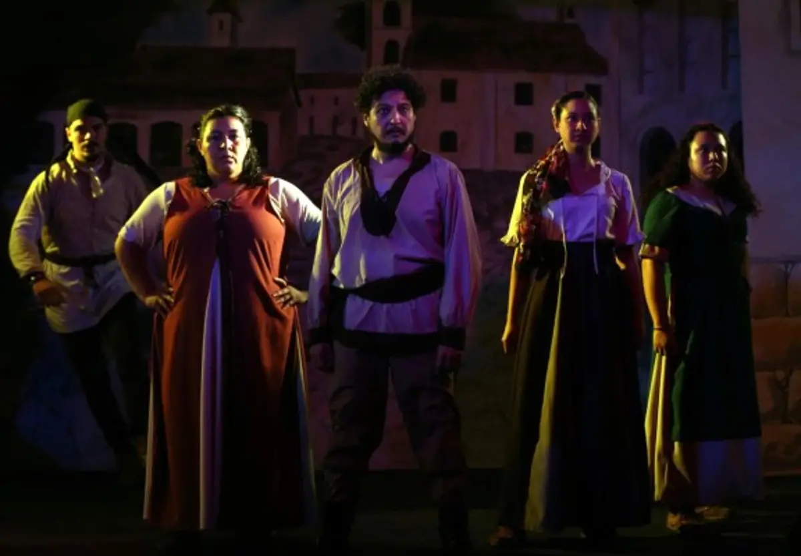
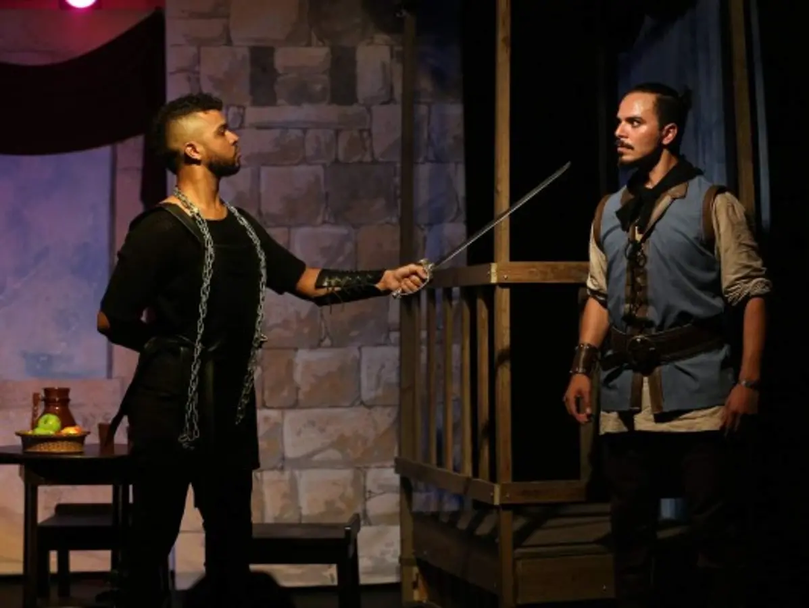

Escenografía e Iluminación
La escenografía no es solo decorado — es el alma visual de la obra. Ambientada en la era medieval, utiliza espacios abiertos como la barbería, las calles y el castillo real, con utilería que refuerza la identidad de cada escena.
En lugar de cerrar el telón, una luz rojo oscuro cubre los cambios de escena, permitiendo ver la coordinación de actores en tiempo real sin romper el ritmo.
Tonos azules representan la noche y la serenidad. Cuando la calma se rompe, la luz azul desaparece abruptamente, generando tensión inmediata.
Naranjas y amarillos simulan la luz solar o el ambiente cerrado de tabernas, construyendo atmósferas cotidianas que acercan al espectador a PinPon.
Los desvanecimientos con freeze frame le dan un toque de sitcom. Los actores congelados en escena aportan comicidad visual y rompen la cuarta pared.
Galería de Personajes
Los personajes son el motor de la historia. Cada uno está construido con un rol social claro que refleja las fuerzas en conflicto dentro de PinPon.

Burgomaestre
El Flautista

El Guerrero

El Reverendo

Lizbeth

Los Regidores
El Vestuario como Símbolo
La vestimenta marca una división social clara y deliberada. Cada grupo lleva inscrita su condición en la tela que porta.

El pueblo · Tonos tierra
Autoridades · Rojo y azul

Guerreros · Negro
Túnicas rústicas en tonos tierra — ocres, grises y marrones — que reflejan sencillez y la crisis que atraviesan.
Rojo y azul — históricamente los tintes más caros — que marcan su estatus, poder y egoísmo.
El negro los asocia con rudeza y represión. El Reverendo lo usa por tradición eclesiástica.
Música y Paisaje Sonoro
El diseño sonoro no acompaña la historia — la construye. Tres pilares sostienen una banda sonora que trasciende lo decorativo.
Identidad medieval
Contraste de bandos
Cortes estratégicos
Flautas, trompetas y zapateos rústicos que sumergen al espectador de lleno en la época de PinPon.
Pueblerinos con ritmos rápidos y alegres vs. regidores con tonos graves y pesados que subrayan su arrogancia.
El "disco rayado" — cortes abruptos ante un grito o comentario — rompe la cuarta pared y potencia el humor.
Crítica y Mensaje Reflexivo
El ciclo de corrupción que destruyó a PinPon es el mismo que amenaza con destruir al siguiente pueblo. Una obra que, entre risas y música, nos obliga a preguntarnos: ¿qué estamos haciendo como sociedad?
El mensaje de la obra funciona como un espejo incómodo de la realidad. Es una crítica a los gobiernos corruptos que priorizan sus intereses personales sobre el bienestar común. La impotencia del pueblo ante una milicia que los silencia y la complicidad de los regidores dejan una lección amarga que persiste mucho después de caído el telón.
Reseñas Estudiantiles
"No es solo teatro para reír y aplaudir; es una obra que te invita a reflexionar sobre nuestros propios valores... un espejo deformante de la realidad."
"Cada personaje tiene su momento de brillar y no opaca a los demás. Hay un equilibrio entre personajes primarios y secundarios que pocas obras logran."
"Logra transformar una tragedia en algo genuinamente divertido. El flautista se roba cada escena con su carisma y humor físico."
"El tono cómico y su humor son bastante buenos. Abordaron la sátira de manera cómica con un mensaje final que va más allá de las risas."
"Tenía sus momentos de comedia, tensión y misterio. Aunque prefiero la profundidad psicológica del cuento escrito, la obra refleja acertadamente cómo funciona la política — los altos miembros solo ven sus propios intereses dejando a los aldeanos a su suerte."